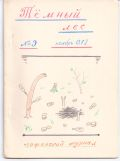

Тёмный лес
N 9

НОВЫЕ СТИХИ
* * *
Сосен тёмные верхушки,
Запах трав, подушки мхов...
Здесь двуноги лишь кукушки,
Не слыхать московских слов.
Но и здесь шоссе протянут,
Станут водкой торговать,
Все поляны испоганят,
Чтоб культурно отдыхать.
█
* * *
Бескрайние руины:
Всё то, чем разум стал,
Когда бог волю дал, -
Скелет среди равнины.
Войну, её причины
Он мудро понимал
Или "УРА" кричал,
Нос не суя в глубины.
Он братьев убивал
До безрассудства смело,
Шёл ли за стадом вслед
Иль нудно рассуждал,
Иль возникал без дела -
Теперь различья нет.
█
* * *
Кручи гор.
Чистый снег.
Дикий лес.
Где же вор -
Человек?
Он исчез.
Он страдал
И искал
Счастья путь;
Шёл войной
Злых, как злой,
Вниз толкнуть.
Где конец,
Наш борец
Позабыл,
Города
Навсегда
Растворил.
Над горой
Ветра вой
И покой.
█
ЦИВИЛИЗАЦИЯ
Прилив сменяется отливом
И обнажается песок.
Стоит зелёный островок -
Убежище ветрам тоскливым.
Пусть этим островком красивым
Играет некрасивый рок -
Честней бесхитростный божок,
Чем правящий жилым массивом.
Но скоро, скоро час пробьёт:
Грязь, деньги и свободу слова,
Вино и пушки принесёт
Посланец светлый жизни новой;
В тюрьму невежество пошлёт
И танцы запретит сурово.
█
* * *
Надо мне учить уроки,
Я ж учить их не хочу.
Говорят мне все пророки,
Что я двойку получу.
Пусть поставят, но зато
Я смогу успеть в кино,
Обыграю всех в лото,
Обыграю в домино.
█
* * *
Затопчу всех, потопчу
И, обчистив все карманы,
Я в пивнушку полечу...
Ах, как быть прекрасно пьяным!
Эх, гармошка, эх, "Калинка"...
И пустилися мы в пляс.
Вдруг подъехала машинка,
И в неё впихнули нас.
Привезли нас в отделенье,
Стали лекцию читать:
Хулиганство - песнопенье,
Хулиганство, мол, плясать.
После крепко нас побили,
Деньги все у нас забрав,
После наголо обрили,
Парикмахера позвав.
И опять нас затолкнули,
Но теперь уж в каземат.
Тут о прошлом мы всплакнули,
Но нельзя вернуть назад.
Утром рано разбудили,
И с лопатами в руках
Так до вечера мы были
У лягавых на глазах.
На пятнадцатые сутки
Отпустили нас домой,
Не забыв при этом шутки
О свидании с женой.
█
* * *
Кто понял тебя, тот тебя не любил
И даже, скорей, ненавидел;
А тот, кто любил, легкомысленным был,
Не понял и горько обидел.
█
* * *
Властитель мира отверженных,
Я слышу твой властный зов,
Но не сдаюсь, а по-прежнему
Биться с тобой готов.
Разум к надежде тянется,
Его тебе не победить.
Тебе никогда не достанется
То сердце, что может любить.
█
* * *
Мне снился сон - за хвост держу я чёрта
И вслух ему свои стихи читаю,
А чёрт зажал руками уши, тщетно
Стремясь удрать из комнаты моей.
Теперь я знаю, почему так редко
Друзья ко мне заходят и так много
Придумывают всяких отговорок,
Когда я в гости их к себе зову.
█
ОТКРЫТОЕ ПИСЬМО
ЖЁЛТОМУ - ВЕЛИКОМУ ЛАФАНСКОМУ БАРДУ,
ПЕВЦУ БИТВЫ НА РАЙСКОЙ ПОЛЯНЕ
Мне до муз никакого нет дела,
И на бога я тоже плевал,
Я на чёрта сейчас не в обиде,
Не беда, что он мне диктовал.
(Из послания █ к █ , конец 1969)
Мы вместе воспевали
Лафанские бои,
Прими ж, республиканец,
Приветствия мои.
Лафанцы помнят свято
Былинный говор твой,
В стихах соединил ты
Искусство с простотой,
Ты в них любил земное,
Солёное на вкус
И чёрта не отдал бы
За десять тысяч муз.
Но ты стихи не пишешь,
Ты лиру позабыл;
Куда-то испарился
Твой юношеский пыл.
(За эти ПЫЛ и ЛИРУ
Валяй ругай меня,
Но уж каким был раньше,
Таким остался я.)
А "Тёмный лес" (вернее
"Осенний скучный лес")
Выходит еле-еле
И ждёт от нас чудес.
И мы бумагу портим,
А чуда нет и нет.
Лежат на нас цепями
Дела последних лет.
Лафанские поэты,
Попав в десятый класс,
Обычно забывают
Дорогу на Парнас.
Одни под игом школы
Свой тяжкий крест несут,
Других трудом замучил
И скукой институт.
И, если кто-то всё же
Берётся сочинять,
То эти вирши трудно
Поэзией назвать.
А ты в девятом классе,
И торопись - пройдёт
Бесплодно, бесполезно
Для песен лучший год.
Неужто ты не помнишь,
Как полон юных сил
Во времена Расцвета
Журнал наш выходил.
Учителя-стефанцы*
Свирепствуют, а мы
Из школы на свободу
Сбежим, как из тюрьмы,
И пишем на свободе,
А то и за урок
Под партою напишем
С десяток звонких строк.
Проснись, берись за дело,
Безумствуй и твори.
Наступит Возрожденье,
Прольётся свет зари.
И да померкнут сразу
В лучах твоих стихов,
Как светлячки на солнце,
Стихи других певцов!
█
* стефанцы - лафанское ругательство (прим. ред.)
МАТЕРИАЛЫ ЗАСЕДАНИЯ ЛАФАНСКИХ СКУКОВЕДОВ
Повестка дня:
1. Определение понятия СКУКА.
2. Применение скуки в лафанской жизни.
3. Что сделать, чтобы укрепить и развить скуковеденье в Лафании.
1
Скука - это эмоционально-социальное* явление в поведении особи лафанца, заключающееся либо в ничегонеделании, либо в незнании, что делать, либо в ковырянии носа.
Поясняем:
Ковыряние носа- это эмоционально-социальное явление скуки, заключающееся в удалении секрета носовой и гайморовой полостей при помощи передних конечностей.
2
Скука - явление, впервые отмеченное в Лафании летом 1969 года нашей эры. Впоследствии скука развилась, пустила глубокие корни и дала плоды (см. лафанские ямы, стихотворения █, █, журналы "Тёмный лес", "Компас").
* Социальное - т.е., зависящее от государственного строя. Государственный строй в Лафании - республика (или скучизм).
Скука применяется лафанцами по большим праздникам для весёлого времяпрепровождения, а также и в других торжественных случаях. Кроме того скука имеет место по будним дням с 8.00 до 13 - 15 часов. На время обеда, к сожалению, скука отсутствует, но вновь появляется во время, которое отведено для уроков.
Трудно переоценить значение скуки в лафанской жизни. Скука - это двигатель лафанской поэзии, культуры и искусства. Она благоприятствует заседаниям, которые идут в перерывах между шахматами (одна из форм скуки).
Я кончил, товарищи.
(доклад товарища █)
3
Для развития скуковеденья в Лафании необходимо больше матерьялов для исследований. Откуда взять скуку? Я предлагаю издать собрания сочинений █ и █.
Есть три священных искусства лафанских патрициев: поэзия, шахматы, наука. Эти три искусства и должны рождать скуку. Итак, нужно усиленно развивать лафанскую поэзию и т.д.
Мне хочется спать, товарищи. Я кончил,
(доклад товарища █)
Выспавшись,участники заседания разошлись по домам.
Последнее изменение страницы 1 Jul 2019
ПОДЕЛИТЬСЯ: